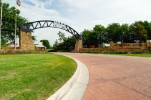

Welcome to Heritage Ranch! THE premier Over 55 Retirement Community of North Texas!

Heritage Ranch
Fairview, TX
High $100s–Mid $500s
Heritage Ranch in Fairview, Texas is a 50+ active adult community located in the town of Fairview, northeast of Dallas. Its 1,144 homes are situated on a 575-acre country setting, surrounded by rolling terrain, wooded areas, creek beds and scenic ponds. This community also features an 18-hole, par 72 championship golf course designed by Arthur Hills.The center of this gated community is the 24,000 square-foot clubhouse which offers continuous activity for residents. The ballroom, billiards and card room, arts and crafts room, and a library with reading and A/V materials and computers allow for studies, relaxation, and socializing. A well-equipped fitness center and an indoor lap pool offer a variety of exercise options. The Corral Grill restaurant and lounge is a favorite spot for lunch and dinner, with an extensive menu for all occasions. Outdoor amenities include four lighted tennis courts, horseshoe and bocce ball courts, an outdoor pool and four miles of hike and bike trails through the woods and around the lakes, skirting the greens and fairways of the golf course.